El sistema de control de versiones moderno más utilizado del mundo, Git es un proyecto de código abierto maduro y con un mantenimiento activo que desarrolló originalmente Linus Torvalds, Git, que presenta una arquitectura distribuida, es un ejemplo de DVCS (sistema de control de versiones distribuido, por sus siglas en inglés). En lugar de tener un único espacio para todo el historial de versiones del software, como sucede de manera habitual en los sistemas de control de versiones antaño populares, como CVS o Subversion
Modelo alternativo de creación de ramas en Git en el que se utilizan ramas de función y varias ramas principales. Según este modelo, los desarrolladores crean una rama de función y retrasan su fusión con la rama principal del tronco hasta que la función está completa

Este flujo a pesar de poder ser un poco largo y tedioso, es una buena manera de estructurar las ramas, poder trabajar en paralelo a otros compañeros, tambien es una buena manera de dejar marcarda cada cambio realizado
Lo primero de todo des del usuario 1 creamos un repositorio y le haremos un commit con un readme simple para que se pueda ver y así poder empezar
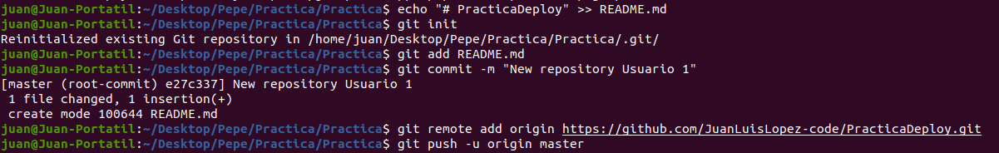Ahora haremos los siguientes comandos en la misma ruta donde estábamos para descargar e implementar la estructura del proyecto
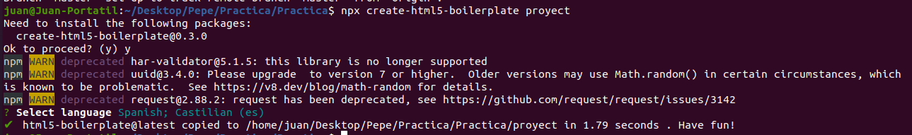Ahora nos moveremos a la carpeta generada y le haremos un npm install
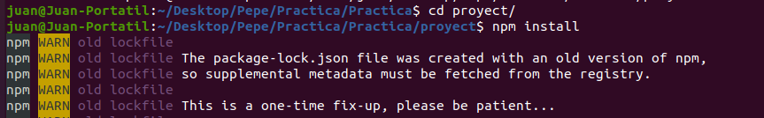Y ahora haremos un npm run start para iniciar el servidor
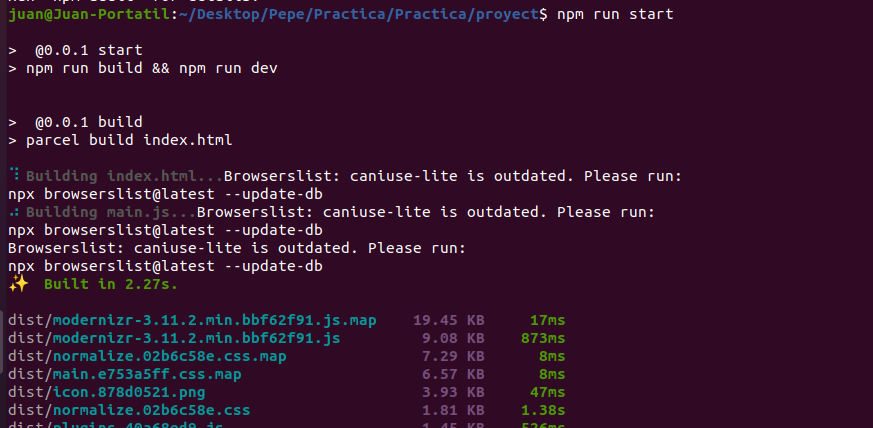Ahora tocaremos la plantilla del html y la dejaremos como se nos pide
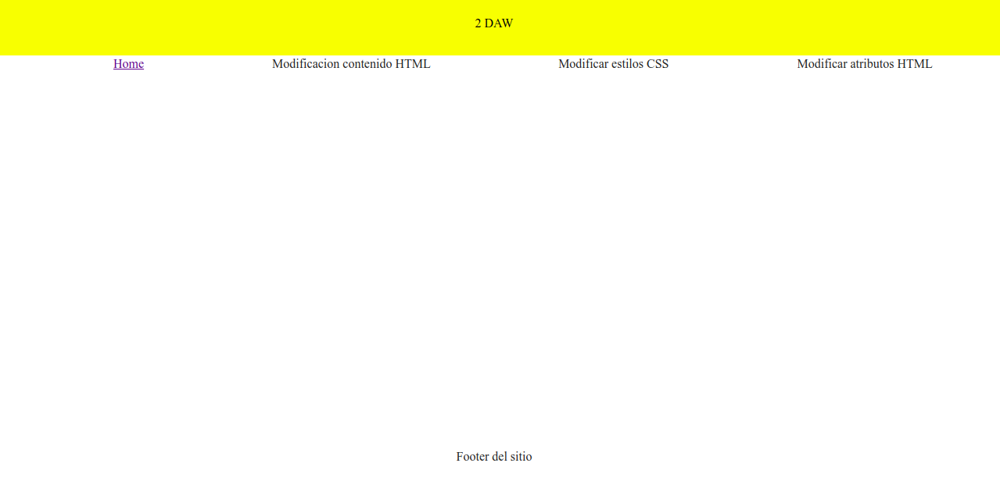Ahora vamos a crear el primer hook con husky, para eso primero instalamos la su librería
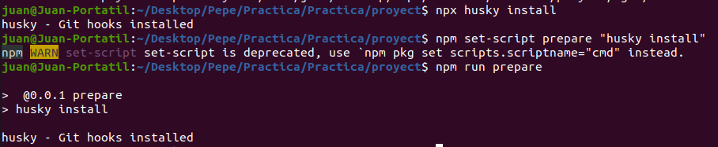Ahora si que vamos a crear el primer hook
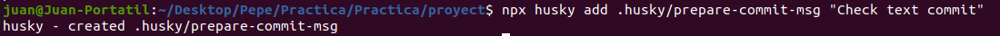Y le hacemos un add
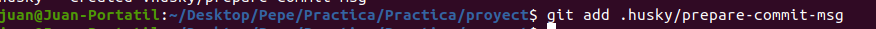Editamos el prepare-commit-msg
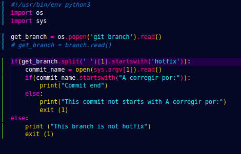Y hacemos completamente lo mismo con el post checkout
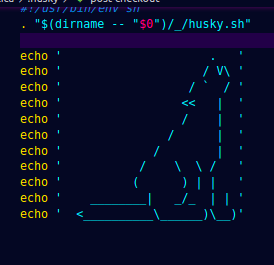Ahora creamos la nueva rama llamada development
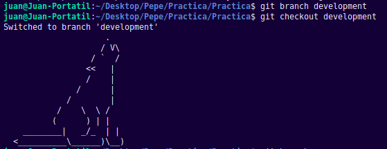Y le hacemos un push a esa rama, para que se suba a github, en cada push que hagamos luego tendremos que hacer un pull en local, para que se sincronicen los cambios, ya que los merges no los estamos haciendo el local si no en github
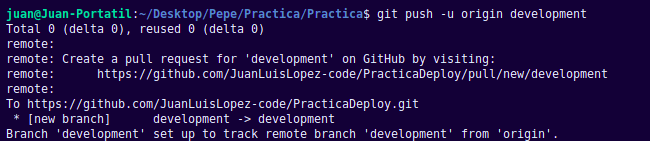Vamos a empezar con la features
Crearemos 2, una llamada feature/contenidoHTML y feature/atributosHTML
En la feature/contenidoHTML, tendremos que poner algo simple que solo modifique un poco el html
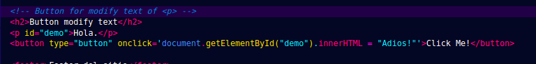Subimos la rama y en github nos saldrá la opción de hacer un pull request
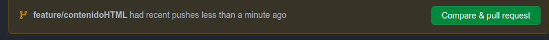Ahora ejecutaremos la pull request de feature/contenidoHTML a development
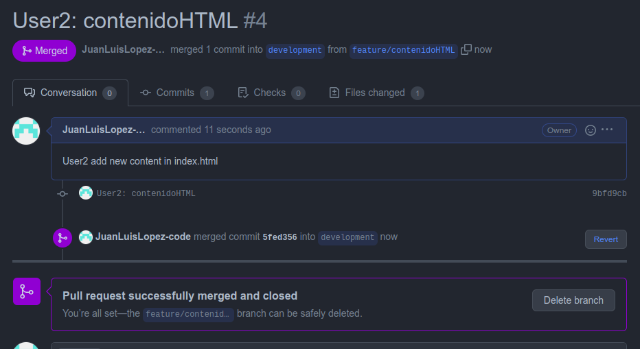Y ahora creamos y nos movemos a la otra feature: feature/atributosHTML
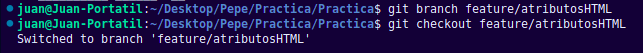Y en el archivo .css lo modificaremos un poco para ponerle algo de css al new content de la anterior features
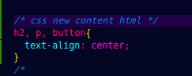Y ahora subimos la nueva rama con sus cambios como usuario 2, para des de github hacer un pull request
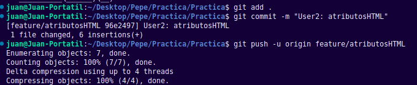 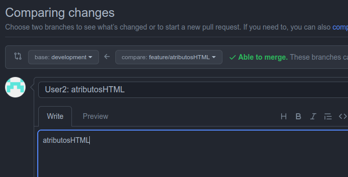Creamos esa pull request y la confirmamos
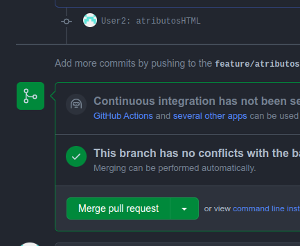Como la parte del EsLint la vi después de hacer todos lo commits, pues voy a hacer una feature nueva para el EsLint
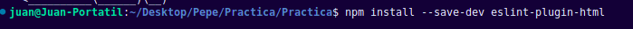 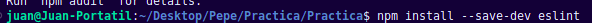Ahora creamos el archivo del eslint
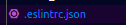Y dejamos el archivo asi, +2 para identar que deje 2 espacios, y report-bad para que diga que hay error
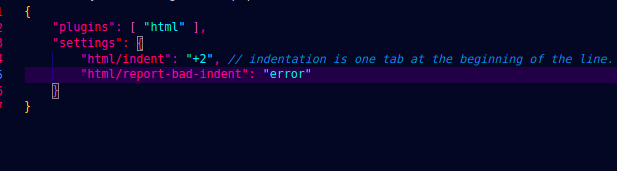Y para probarlo he identado mal un <script> del index.html y el eslint me marca el error
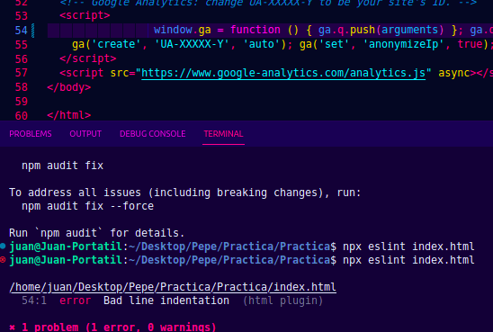Y ahora hacemos el hook de pre-commit
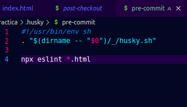Y si algún archivo html esta mal identado no me deja hacer el commit
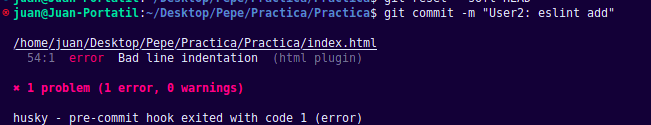Y si algún archivo html esta mal identado no me deja hacer el commit
Ahora subimos la feature al github y le hacemos pull request para unirla a development
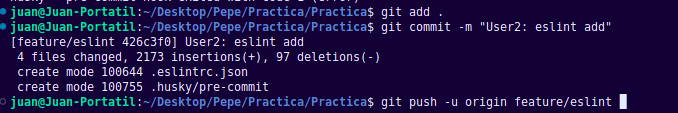 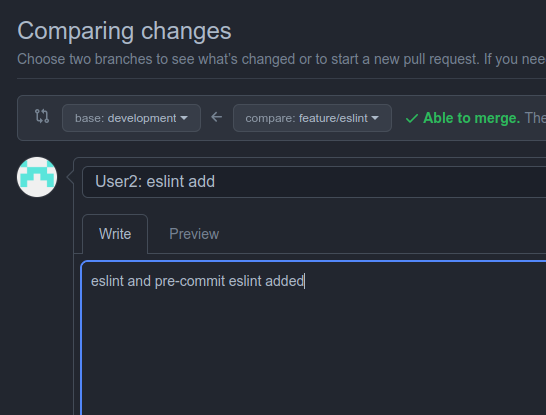 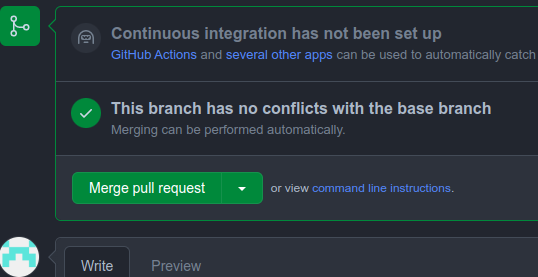Ahora nos vamos al usuario 3
Lo primero de todo es crear la nueva feature llamada feature/estilosCSS que lo único que haremos es que en el botón de Click me al clickar la letra sea de un tamaño mas grande
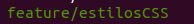 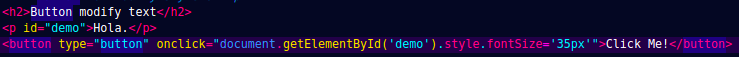Y hacemos un commit con esos cambios ademas de subir también la rama
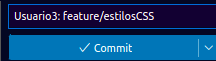Ahora des del github hacemos un pull request de la nueva feature a development
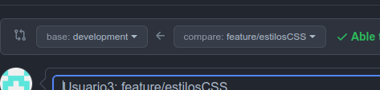Y le hacemos un merge
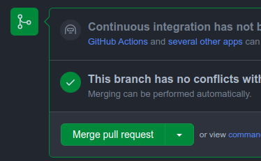A partir de la rama development creamos la nueva release llamada release1.0
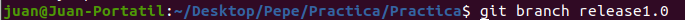Y ahora des de la rama release le hacemos un tag de v1.0 al ultimo commit
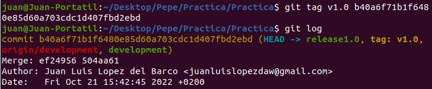Ahora subo la rama a github
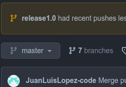Y lo siguiente es hacer un merge con master
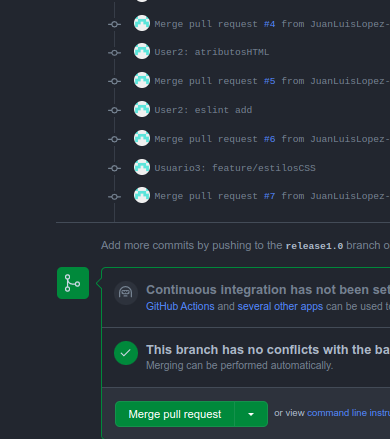Y con eso a la rama master ya se le han añadido todos los commits
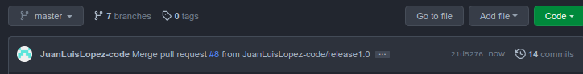Volviendo al usuario 1 creara una rama hotfix
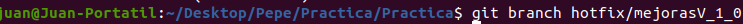Y en el html añadiremos lo siguiente
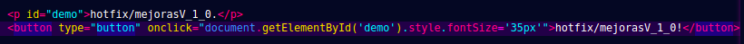Y lo subiremos al github
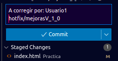 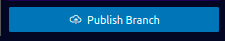Ahora le hacemos un pull request con master y con development
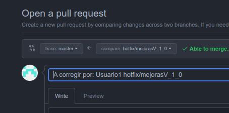 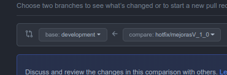Ahora creamos la pagina de gh-pages y la vaciamos
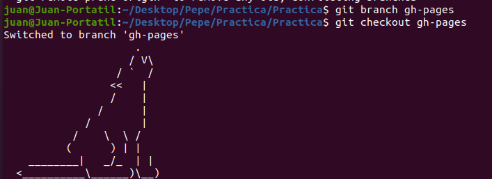 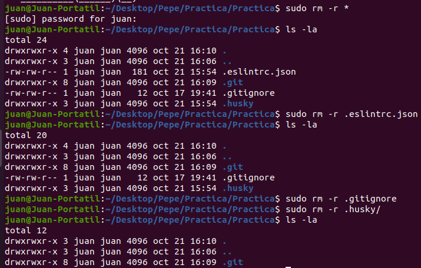Y creamos el index.html y css para documentar todo el proceso
Por ultimo el canvas, agregamos las features y hotfix a un project
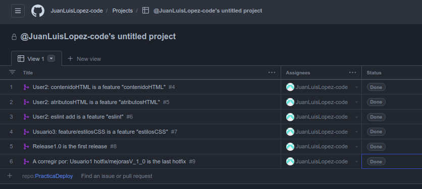 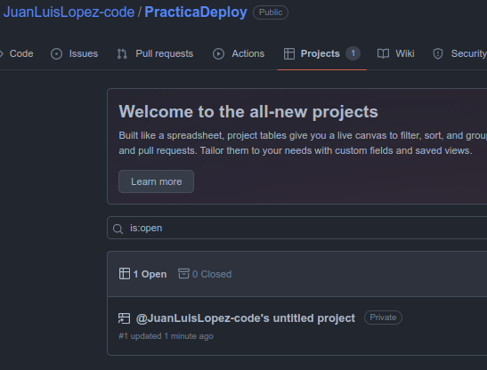